3 holky Pekařky
Vaříme rády
a pro vás.
Poctivá domácí kuchyně z Pekařské ulice v Litoměřicích. Každý týden nové menu, velké porce a oběd, který vám rády dovezeme domů nebo do kanceláře.
Po–Pá 10:00–14:00
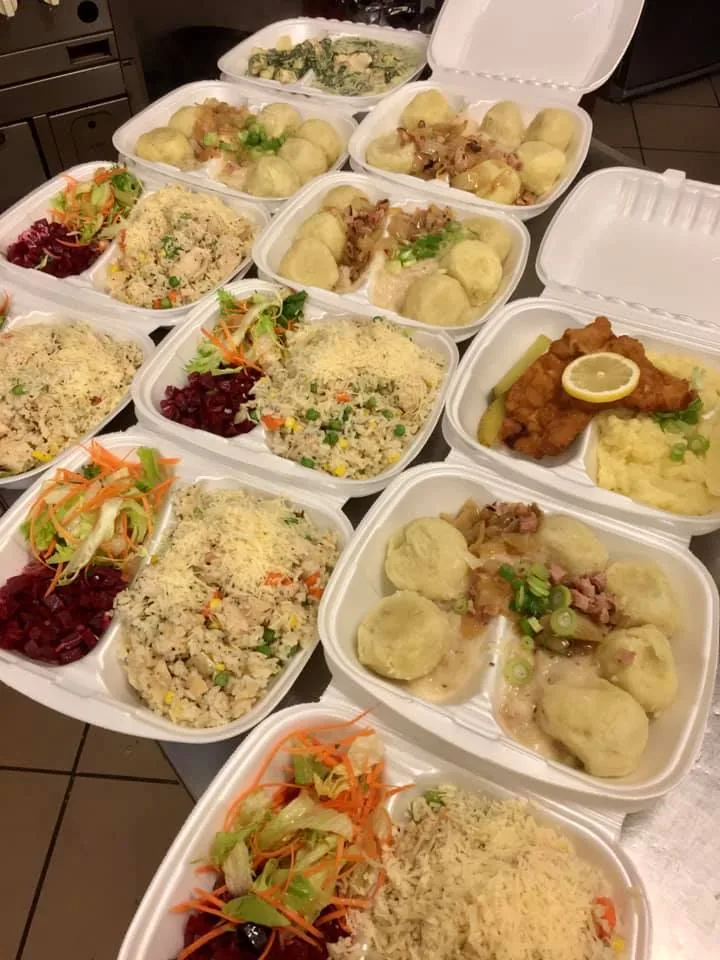
Oběd až k vám
Rozvoz jídel
Nestíháte si odběhnout? Oběd vám rády dovezeme domů nebo do kanceláře. Hodně našich hostů si nechává vozit pravidelně, klidně pro celou kancelář.
- Vyberte siz týdenního menu. Každý den je z čeho vybírat.
- Zavolejtena 601 121 115, řekněte kolik porcí, kam a na kdy.
- Dobrou chuťPřivezeme teplé, v krabičkách, s domácí péčí.
Kdo tu vaří
Tři holky Pekařky
Jsme malé útulné bistro s domácí kuchyní v Pekařské ulici. Vaříme tak, jak bychom vařily doma: z čerstvých surovin, bez polotovarů a s láskou. Proto se k nám lidé vrací a proto jsou porce pořádné.
Od klasiky jako svíčková, řízek nebo panenka s knedlíkem až po těstoviny, saláty a asijské speciality. A ke kávě něco domácího z trouby.
- Čerstvé suroviny, žádné mražené polotovary
- Každý den i zdravá, vyvážená varianta
- Pár stolečků uvnitř na rychlý oběd + salonek
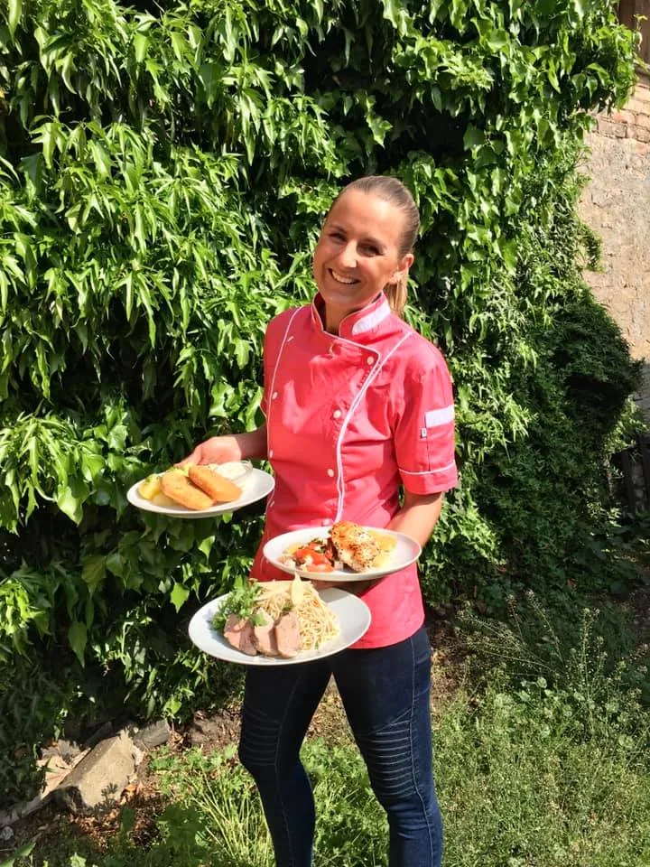
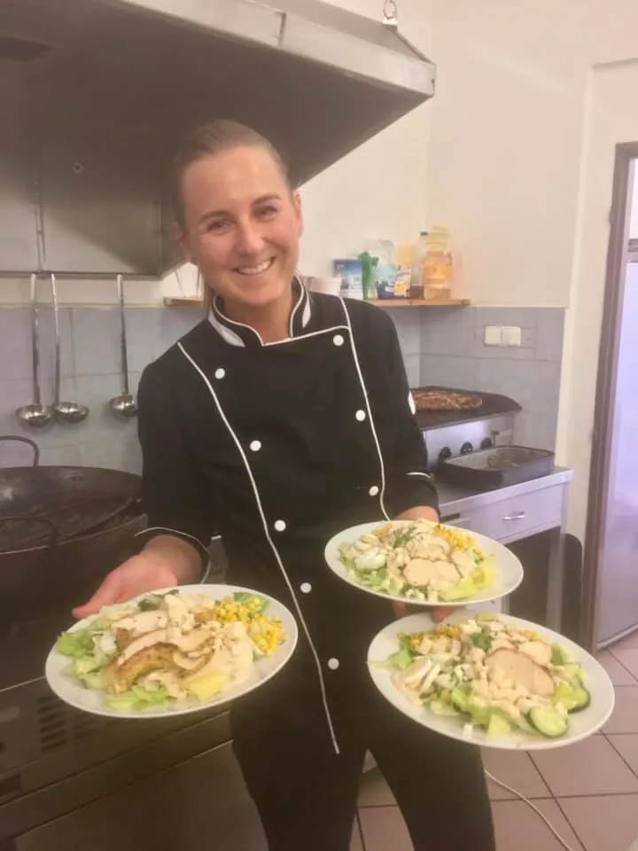
Z našich talířů
Takhle u nás vypadá oběd
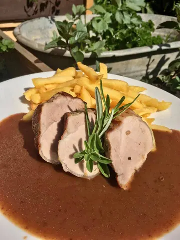
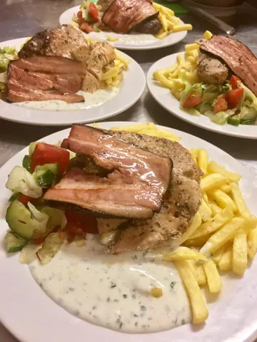
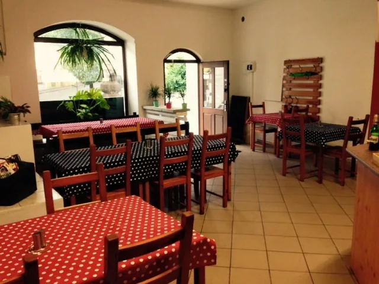
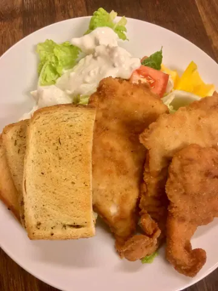
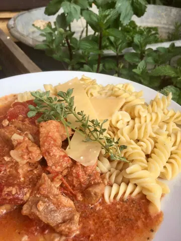
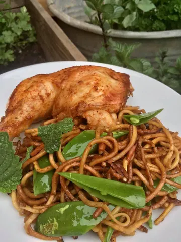
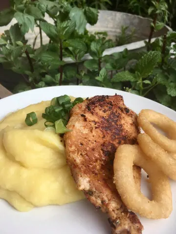
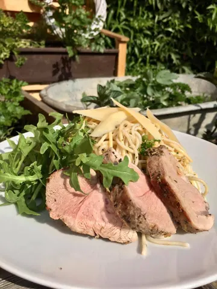
Co o nás říkáte
Hodnocení hostů
4,4★★★★★22 recenzí na Googlu
„Necháváme si pravidelně dovážet a jídlo vždy perfektní. Porce jsou velké a každý den na menu zdravá a nutričně vyvážená varianta.“
„Toto bistro rozhodně doporučuji 😍💪 naprosto cenově přístupné a opravdu kvalitní domácí jídlo.“
„Ein richtig tolles Bistro! Das Essen war ausgezeichnet und der Service angenehm freundlich und fix.“
Opravdu skvělé bistro! Jídlo bylo výborné a obsluha příjemná a rychlá.
Bereme stravenky
- Pluxee papírové i karta
- Up papírové
- Edenred papírové
- Naše stravenka papírové
Zastavte se
Kde nás najdete
Bistro PekařkaPekařská 2236
412 01 Litoměřice – Předměstí
- Pondělí
- 10:00–14:00
- Úterý
- 10:00–14:00
- Středa
- 10:00–14:00
- Čtvrtek
- 10:00–14:00
- Pátek
- 10:00–14:00
- Sobota
- zavřeno
- Neděle
- zavřeno
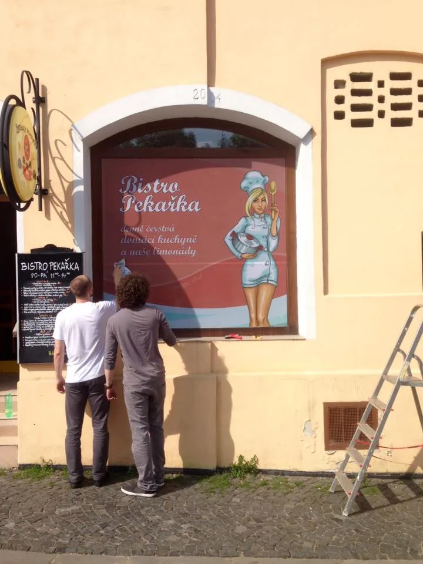